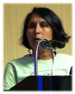

Kernel self tests
There is a minimal set of tests there now; going forward, she would like to increase the set of tests that is run. We have lots of testing code out there, she said; it would be good to make more use of it. But she would like help in deciding which tests make sense to include with kselftest. The goal, she said, is to make things run quickly; it's a basic sanity test, not a full-scale stress test.
Ted Ts'o asked what the time budget is; what does "quickly" mean? Shuah
replied that she doesn't know; the current tests run in well under ten
minutes. That time could probably be increased, she said, but it should
not grow to the point that developers don't want to run the tests. Mel

Josh Triplett expressed concerns about having the tests in the kernel tree itself. It could be hard to use bisection to find a test failure if the tests themselves are changing as well. Perhaps, he said, it would be better to fetch the tests from somewhere else. But Shuah said that would work against the goal of having the tests run quickly and would likely reduce the number of people running them.
Darren Hart asked if only functional tests were wanted, or if performance tests could be a part of the mix as well. Shuah responded that, at this point, there are no rules; if a test makes sense as a quick sanity check, it can go in. What about driver testing? That can be harder to do, but it might be possible to put together an emulator that simulates devices, bugs and all.
Grant Likely said that it would be nice to standardize the output format of the tests to make it easier to generate reports. There was a fair amount of discussion about testing frameworks and test harnesses. Rather than having the community try to choose one by consensus, it was suggested, Shuah should simply pick one. But Christoph Hellwig pointed out that the xfstests suite has no standards at all. Instead, the output of a test run is compared to a "golden" output, and the differences are called out. That makes it easy to bring in new tests and avoids the need to load a testing harness on a small system. Chris Mason agreed that this was "the only way" to do things.
The session closed with Shuah repeating that she would like more tests for the kselftest target, along with input about how this mechanism should work in general.
Next: Two sessions on review.
| Index entries for this article | |
|---|---|
| Kernel | Regression testing |
| Conference | Kernel Summit/2014 |
Posted Aug 21, 2014 3:39 UTC (Thu)
by glikely (subscriber, #39601)
[Link] (1 responses)
It is absolutely important to make it easy to execute longer running tests, and I think we're going to try to do that. However, for the purpose of smoke testing we'll need to predefine a set of "effectively instant" test cases.
Posted Aug 25, 2014 17:26 UTC (Mon)
by grundler (guest, #23450)
[Link]
What's critical for getting developers to run tests, it has to be easy to:
Just like "make install" is the standard way to build a kernel, we need a standard way to discover and invoke the tests..perhaps "make list_tests" and "make run_test FOO".
ChromeOS uses autotest framework to meet those goals...but autotest has substantial infrastructure (setup/cleanup) cost (~30 seconds for a basic test) that clearly could be improved upon by some "in kernel" tests. And while python isn't that difficult, learning curve for autotest infrastructure is painful enough that I don't like re-learning it the once or twice a year I have to work on some test.
Posted Aug 21, 2014 19:25 UTC (Thu)
by jnareb (subscriber, #46500)
[Link]
Kernel self tests
Kernel self tests
1) DISCOVER tests
2) RUN tests
Git test suite